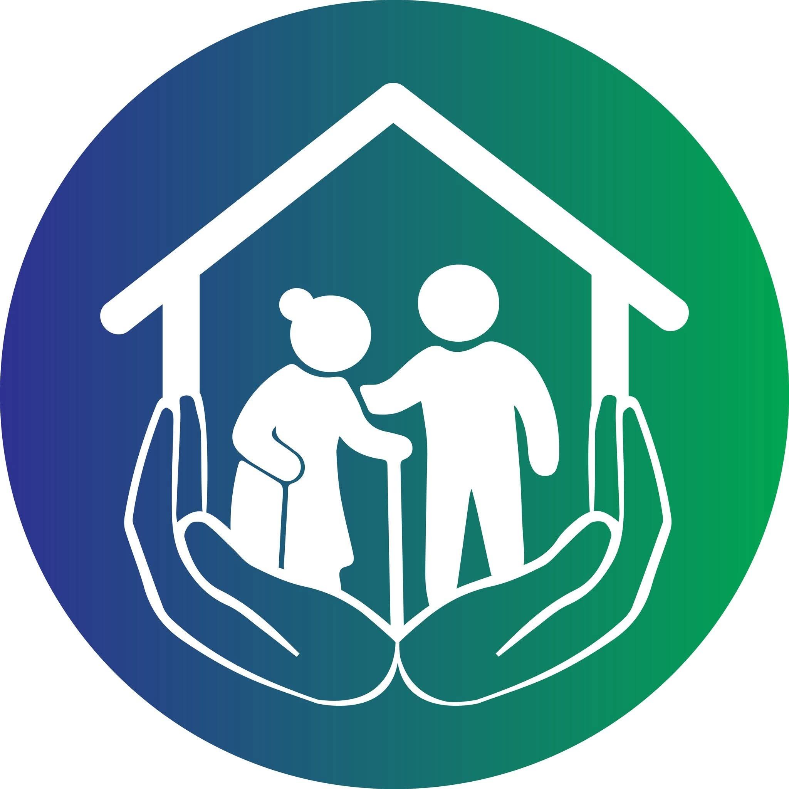
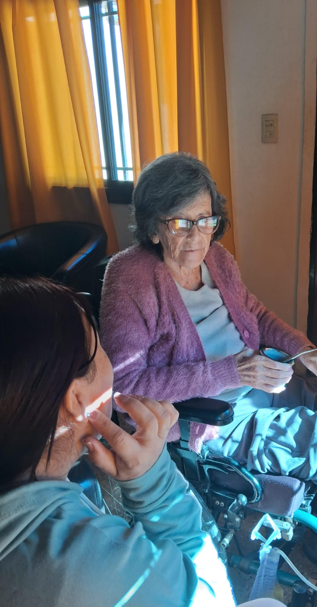
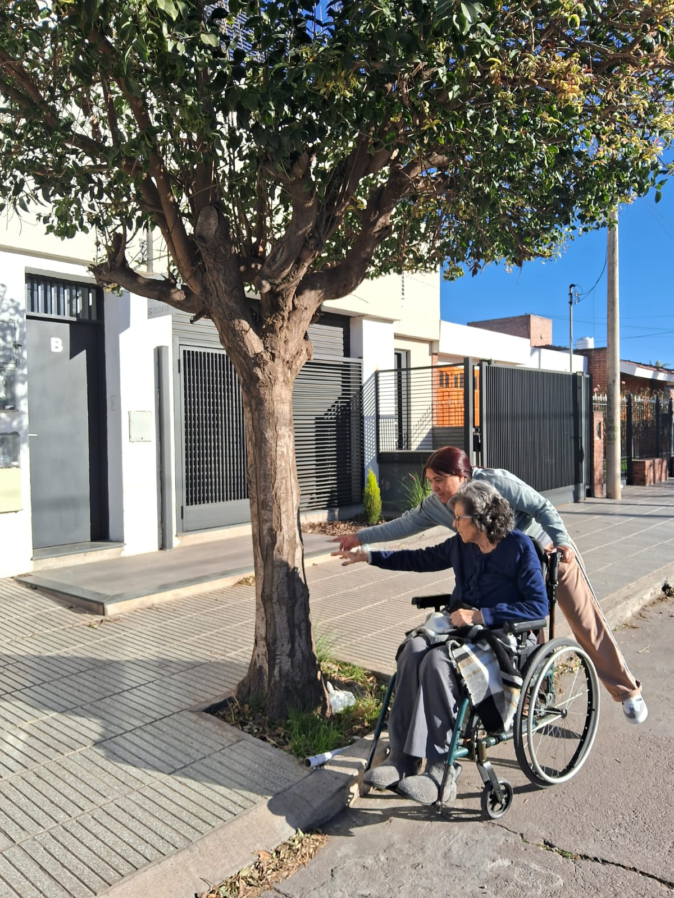

Cuidado y acompañamiento a domicilio para personas mayores
Conectamos familias con cuidadoras seleccionadas cuidadosamente, o te ayudamos a poner tu vocación de cuidado al servicio de quien lo necesita.

Un proyecto que nació de una experiencia personal y se convirtió en un propósito.
Manos que Cuidan nació de una necesidad muy cercana, encontrar para un ser querido una persona que pudiera acompañar y cuidar con responsabilidad, respeto y sobre todo, con humanidad. Vivir esa experiencia nos hizo comprender cuánto puede movilizar a una familia la decisión de delegar el cuidado de alguien que ama. Las dudas, los temores y la necesidad de encontrar una persona confiable que no solo esté presente, sino que sepa acompañar, escuchar y respetar. Porque cuidar a un adulto mayor no es simplemente cubrir una necesidad. Es preservar su bienestar, su dignidad, sus tiempos y su calidad de vida.
Desde esa experiencia creamos Manos que Cuidan, con una premisa muy clara, un buen servicio de cuidado necesita tanto calidad humana como organización y profesionalismo.
Por eso escuchamos a cada familia, conocemos cada situación y evaluamos cuidadosamente las necesidades de cada adulto mayor. Seleccionamos a quienes forman parte de nuestra red teniendo en cuenta su experiencia, capacitación, referencias y, fundamentalmente, sus valores humanos, compromiso y vocación de servicio.
Trabajamos de manera responsable y ordenada, porque sabemos que cuando una familia nos confía el cuidado de un ser querido, también nos está confiando una parte muy importante de su tranquilidad.
Y nuestro acompañamiento no termina cuando presentamos a una cuidadora. Seguimos cerca para escuchar, orientar y acompañar durante todo el proceso.
Manos que Cuidan nació de una necesidad familiar. Hoy queremos transformar esa experiencia en tranquilidad para muchas otras familias.

Escribinos y te respondemos a la brevedad